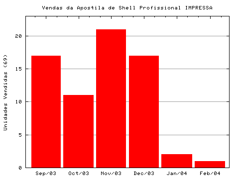

Antes do PDF, a apostila era vendida no formato tradicional, de várias páginas xerocadas e encadernadas que eram enviadas aos leitores pelo Correio. Esta página conta sobre essa experiência, dando os detalhes de como tudo aconteceu, inclusive com valores de custos e histórico das vendas.
A história da venda das apostilas
Eu escrevi a apostila para poder ministrar cursos por aí. Ela era o material de apoio, parte integrante de um produto maior: o curso de Shell Script.
A idéia era ministrar vários cursos, porém acabou fechando apenas um. Fazer a apostila foi um trabalho desgastante, e infelizmente este único curso não serviu para pagar todo o tempo investido.
Estava eu lá jururu quando recebi alguns e-mails interessantes. Pessoas que não puderam fazer o curso estavam me perguntando se eu não venderia somente a apostila para elas poderem estudar em casa. Então pensei: por que não?
Eu receberia mais $$$ e eles receberiam o material que desejam. Um bom negócio. Então montei um esquema para vender a apostila "na Internet", e ela acabou se tornando um produto.
O esquema era bem simples: eu xerocava e encadernava as cópias da apostila e enviava por correio para os interessados. O pagamento era feito direto na minha conta bancária e toda a comunicação se dava por e-mail.
Embora simples, na prática este esquema consumia muito do meu tempo, com idas constantes a gráficas e correio. Após 5 meses e 77 apostilas vendidas, parei.
Depois comecei a vender a apostila como um arquivo PDF, que é gerado automaticamente com o nome do comprador no rodapé e posso enviar por email. Com um processo mais simples, ganhei tempo livre livre para minhas outras coisas &:)
A rotina de fazer e enviar apostilas
Burocracias Iniciais:
- Copyright: Registrar a apostila no Escritório de Direitos Autorais da Biblioteca Nacional
- Matriz: Fazer a matriz da apostila, em papel de boa qualidade e impressão laser
- Preço: Consultar preços de gráficas, materiais, combustível e postagem para calcular qual o preço de custo de cada apostila enviada, e então definir o preço final de venda
- Operacional: Bolar um esquema para guardar e consultar dados dos compradores e o status da transação (arquivo texto e shell!)
- Marketing: Colocar no ar uma página detalhando o conteúdo da apostila e o esquema de vendas
Produção da Apostila:
- Vou na gráfica deixar os originais para eles xerocarem e encadernarem 10 cópias
- Uma semana depois volto na gráfica para pegar as apostilas
- Em casa confiro com calma cada apostila, página por página
- Volto na gráfica para eles arrumarem as páginas defeituosas (que sempre tem)
- A apostila agora está pronta para venda
- Passados alguns dias, o estoque diminui e volto para o passo 1
Pagamento e Envio:
- Recebo o e-mail do interessado
- Anoto todos os seus dados na minha base (arquivão texto)
- Respondo o e-mail passando os dados da minha conta no banco
- A pessoa manda um e-mail dizendo que fez o depósito
- Confiro na conta para ver se o dinheiro entrou
- Preencho o envelope com o meu endereço e do destinatário
- Faço uma dedicatória original na apostila (todas saíram com dedicatórias diferentes)
- Coloco a apostila dentro do plástico e lacro com durex
- Coloco tudo dentro do envelope e lacro o envelope (com cola e durex)
- Vou até o Correio, enfrento fila e mando como carta registrada
- Mando e-mail avisando o interessado que a apostila foi enviada
- Recebo resposta avisando que a apostila chegou
- Dou baixa no meu controle
- Respondo o e-mail enviando o pacote .tgz com os arquivos da apostila
- Fim dessa transação, e começa tudo de novo para o próximo...
Pensa que é fácil? Rapadura é doce mas não é mole não!
Os detalhes sórdidos
- Cada uma das 77 apostilas ganharam uma dedicatória manuscrita, única e na medida do possível, personalizada. Como nerd que só usa teclado, minha letra escrita é simplesmente um nojo, mas me esforcei para tentar deixar legível &:)
- Usei ao todo 4 gráficas (xerox) e a experiência não foi agradável. Copiar e encadernar apostilas é um trabalho chato, lento e que deve ser feito com atenção para sair com qualidade boa. Folhas faltando, de ponta cabeça, com borrões, amassadas, tortas, com falhas... Esses foram alguns dos problemas encontrados. Foram raras as apostilas que vinham 100% boas, a maioria eu tinha que desmontar e ficar trocando páginas até ficar boa. As que sobravam com defeito voltavam para o pessoal do xerox arrumar.
- O envelope para mandar pelo correio merece atenção especial. Já imaginou o carteiro entregar e a carta ficar no tempo, tomar chuva ou alguém lavar a calçada? Era preciso proteger a apostila da água. Em Florianópolis encontrava na própria agência dos Correios um envelope de plástico, que já vinha com cola, pronto para enviar. Caro, porém me poupava tempo, custava R$ 1,50. Em Curitiba não achei desse envelope e comprava o de papel normal, mas colocava a apostila dentro daqueles plásticos com quatro furos de pastas de arquivos (ou de papel de carta, como as meninas chamam).
- Para o correio, alguns me disseram que eu podia enviar como carta normal mesmo, que não tinha problema e era mais barato. Mas eu prefiro a registrada que em caso de problemas tem como rastrear e ver aonde que a dita cuja está.
- Para identificar facilmente os depósitos em conta, cada um recebia um valor diferente nos centavos. O preço era 35 reais, mas uns pagaram R$ 34,99, outros R$ 34,98 e assim vai. Para cada pedido eu checava qual o valor "da vez" que estava livre. A faixa variava entre R$ 34,95 e R$ 35,05.
- Todo o controle de dados do comprador, datas, se já pagou, se a apostila já chegou, tudo foi feito num único arquivo texto que era ao mesmo tempo a base e o próprio programa que a consultava. Tudo em Shell, é claro! Veja como funciona.
Contabilidade geral
| Preço de Venda de Cada Apostila: | R$ 35,00 (postagem incluída) |
| Formato da Apostila: | 108 páginas, A4, encadernada, capa plástica |
| Início das Vendas: | 27 de Agosto de 2003 |
| Final das Vendas: | 29 de Janeiro de 2004 |
| Apostilas Vendidas: | 77 unidades (sendo 8 presenteadas) |
| Dinheiro Arrecadado (Bruto): | R$ 2.082,27 |
| Dinheiro Arrecadado (Líquido): | R$ 895,64 |

Custos
| Data | R$ | Descrição |
|---|---|---|
| 20-Ago-2003 | 2,50 | encadernação apostila p/Direitos Autorais |
| 20-Ago-2003 | 20,00 | taxa dos Direitos Autorais (UDESC) |
| 22-Ago-2003 | 16,20 | impressão da apostila-matriz (CopyFlo) |
| 22-Ago-2003 | 8,28 | diesel ida/volta 46 Km (CopyFlo) |
| 28-Ago-2003 | 89,00 | xerox+encadernação 10 apostilas (CopyStar) |
| 01-Set-2003 | 3,40 | gasolina ida/volta 17 Km (Des.Atual) |
| 11-Set-2003 | 3,40 | gasolina ida/volta 17 Km (Des.Atual) |
| 11-Set-2003 | 3,40 | gasolina ida/volta 17 Km (Des.Atual) |
| 11-Set-2003 | 15,00 | correio: 10 envelopes plásticos |
| 12-Set-2003 | 18,60 | correio: 4 apostilas |
| 12-Set-2003 | 13,95 | correio: 3 apostilas |
| 16-Set-2003 | 3,40 | gasolina ida/volta 17 Km (Des.Atual) |
| 18-Set-2003 | 70,00 | xerox+encadernação 9 apostilas (Des.Atual) |
| 18-Set-2003 | 4,00 | gasolina ida/volta 20 Km (Mdd) |
| 18-Set-2003 | 13,95 | correio: 3 apostilas |
| 19-Set-2003 | 4,00 | gasolina ida/volta 20 Km (Mdd) |
| 20-Set-2003 | 4,00 | gasolina ida/volta 20 Km (Mdd) |
| 20-Set-2003 | 60,00 | xerox+encadernação 6 apostilas (Mdd) |
| 22-Set-2003 | 21,30 | correio: 8 envelopes, 2 apostilas |
| 23-Set-2003 | 9,30 | correio: 2 apostilas |
| 30-Set-2003 | 4,00 | gasolina ida/volta 20 Km (Mdd) |
| 30-Set-2003 | 110,00 | xerox+encadernação 11 apostilas (Mdd) |
| 30-Set-2003 | 9,30 | correio: 2 apostilas |
| 02-Out-2003 | 15,30 | correio: 4 envelopes, 2 apostilas |
| 09-Out-2003 | 12,30 | correio: 2 envelopes, 2 apostilas |
| 17-Out-2003 | 12,30 | correio: 2 envelopes, 2 apostilas |
| 18-Out-2003 | 4,00 | gasolina ida/volta 20 Km (Mdd) |
| 18-Out-2003 | 210,00 | xerox+encadernação 21 apostilas (Mdd) |
| 18-Out-2003 | 6,00 | correção de 3 apostilas (Mdd) |
| 23-Out-2003 | 9,30 | correio: 2 apostilas |
| 25-Out-2003 | 9,30 | correio: 2 apostilas |
| 30-Out-2003 | 2,35 | 5 envelopes brancos |
| 31-Out-2003 | 4,65 | correio: 1 apostila |
| 01-Nov-2003 | 2,00 | 5 envelopes amarelos |
| 04-Nov-2003 | 9,30 | correio: 2 apostilas |
| 05-Nov-2003 | 4,65 | correio: 1 apostila |
| 06-Nov-2003 | 4,65 | correio: 1 apostila |
| 07-Nov-2003 | 4,65 | correio: 1 apostila |
| 17-Nov-2003 | 99,20 | xerox+encadernação 10 apostilas (P.O.) |
| 24-Nov-2003 | 4,65 | correio: 1 apostila |
| 05-Dez-2003 | 1,40 | 5 envelopes marrons |
| 09-Dez-2003 | 4,65 | correio: 1 apostila |
| 09-Dez-2003 | 10,50 | correio: 1 apostila p/Inglaterra |
| 09-Dez-2003 | 200,00 | xerox+encadernação 20 apostilas (P.O.) |
| 16-Dez-2003 | 13,95 | correio: 3 apostilas |
| 19-Dez-2003 | 2,00 | 10 envelopes marrons |
| 22-Dez-2003 | 18,60 | correio: 4 apostilas |
| 09-Jan-2004 | 4,65 | correio: 1 apostila |
| 26-Jan-2004 | 4,65 | correio: 1 apostila |
| 04-Fev-2004 | 4,65 | correio: 1 apostila |
| TOTAL | 1.186,63 |
As 38 cidades para onde elas foram
- Alfenas - MG
- Aracruz - ES
- Balneário Camboriú - SC
- Boa Vista - RR
- Brasília - DF
- Cambridge - Reino Unido
- Campinas - SP
- Campo Grande - MS
- Canberra - Austrália
- Curitiba - PR
- Divinópolis - MG
- Florianópolis - SC
- Fortaleza - CE
- Goiânia - GO
- Guaíba - RS
- Imperatriz - MA
- Itumbiara - GO
- Juiz de Fora - MG
- Lajeado - RS
- Maceió - AL
- Magé - RJ
- Maringá - PR
- Mundo Novo - BA
- Natal - RN
- Novo Hamburgo - RS
- Osasco - SP
- Porto Alegre - RS
- Recife - PE
- Rio de Janeiro - RJ
- Santo André - SP
- Santo Ângelo - RS
- Santos - SP
- São José dos Campos - SP
- São Leopoldo - RS
- São Paulo - SP
- Sertãozinho - SP
- Suzano - SP
- Várzea Grande - MT